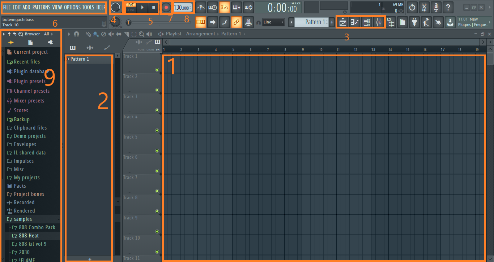
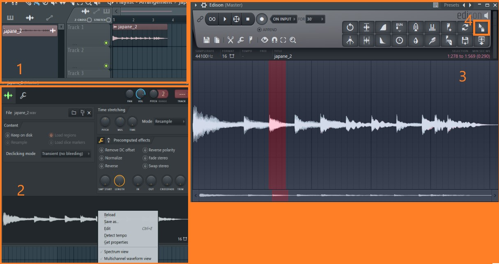

Основы пользования FL Studio 20
FL Studio 20 - цифровая звуковая рабочая станция, т.н. секвенсер ("создатель последовательностей") для написания музыки. В этой программе пользователь может создавать музыку при помощи сведения аудиодорожек и MIDI материала.
FL Studio совместимо с другими программами для создания музыки. Под этим в основном имеют в виду инструменты VST. О них расскажем позже.
FL Studio предоставляет возможность создавать широкий спектр звучания. В этой программе можно создавать как хип-хоп и электронную музыку, изначально создаваемую в секвенсерах, так и рок и даже оркестральные композиции при должном умении и необходимом наборе инструментов.
Рассмотрим интерфейс программы. При запуске вы увидите огромное количество различных кнопок, а также основной плейлист. Рассмотрим самые главные элементы (см. рис. 1): 
Многие кнопки повторяют друг друга. Например, кнопку, открывающую список плагинов, можно найти над списком слева и в правом верхнем углу.
Как этим пользоваться?
Итак, чтобы вы не утруждали себя самостоятельным изучением того, как работает эта программа, разберем все по порядку.
Сэмплы
Сэмплы - это готовые аудиодорожки, используемые для написания музыки. Это может быть как запись барабанного удара, так и обработанная запись голоса. Есть два пути добавления сэмпла в свою композицию. Первый - скачать готовый сэмпл или набор сэмплов из сети Интернет. После этого вам будет необходимо перенести сэмпл в специальную папку для них. Посмотреть путь существующих папок или добавить новую можно во вкладке FILE. Второй - создать сэмпл самостоятельно. Рассмотрим упрощенный процесс создания сэмплов (см. рис. 2). 
Плагины
Плагины - это программы, созданные для обработки и создания звука. Пример плагина вы видели выше - это Edison, встроенный в базовую FL Studio 20. Помимо Edison существует большое множество встроенных плагинов. Например, Fruity reverb, используемый для создания эффекта реверберации у аудиодорожки.
Помимо встроенный плагинов, есть и сторонние. Их можно купить (или иногда скачать бесплатно) в сети Интернет. Основным и самым распространенным видом плагинов является VST. Такие плагины совместимы не только с FL Studio, но и с другими секвенсерами, например, Ableton Live.
Плагины устанавливаются подобно скачиванию сэмплов. При установке укажите путь основной папки для плагинов, либо укажите путь к новой папке во вкладке FILES. После этого откройте список всех плагинов и запустите сканирование. Новый плагин появится в списке.
Все плагины работают по-разному, так что разобрать принцип их работы в обобщенном виде не получится. Для работы с некторыми плагинами-инструментами необходимо проводить долгое время за их изучением.
Паттерны, каналы и Piano roll